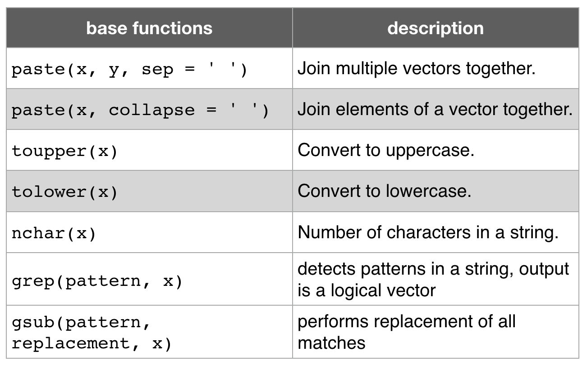
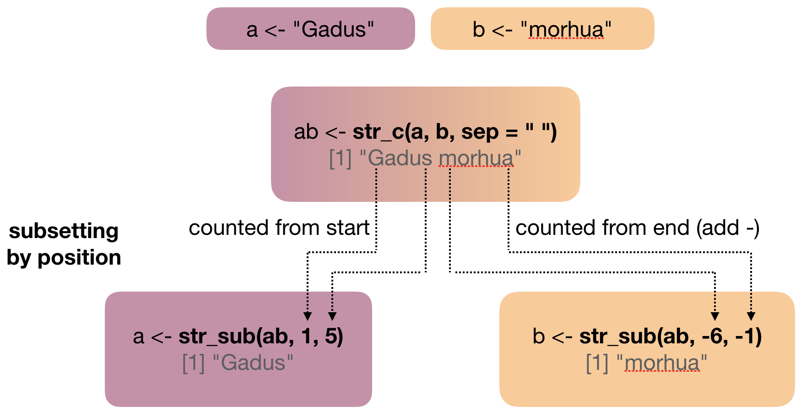
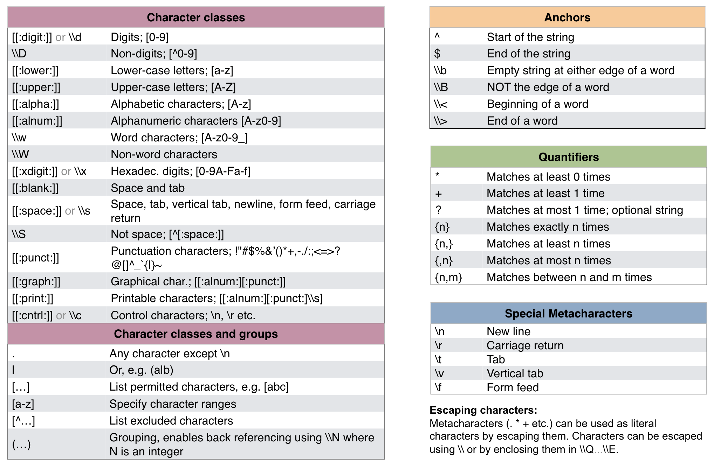

Data Analysis with R
16 - String manipulation and regular expressions
Saskia A. Otto
Postdoctoral Researcher
Strings in R

What is a string again?
- Any value written within a pair of single quote or double quotes in R is treated as a string and stored in a character vector (within double quotes).
- Lets look at a famous quote made by Albert Einstein:
einstein <- c("The difference", "between stupidity",
"and genius is that", "genius has its limits.")
→ The character vector einstein contains 4 elements or more precisely 4 strings.
Manipulation of strings
- R may not be as rich and diverse as other scripting languages when it comes to string manipulation, but it can take you very far if you know how.
- This tutorial gives you only a short introduction into some functions for basic manipulations.
- Some of these functions require regular expressions (regex or regexpr in short ), which are a concise language for describing patterns in strings that typically contain unstructured or semi-structured data.
- To learn more about regex I recommend the excellent website http://www.regular-expressions.info. It contains many different topics, resources, examples, and tutorials at both beginner and advanced levels.
Manipulation of strings
Even if you don't plan to do text analysis, text mining, or natural language processing, it is useful to have some knowledge on handling and processing strings in R for the following reasons:
- Your dataset most likely will contain some text, e.g. stations names, species names, etc.
- you might want to remove a given character in the names of your variables or in the entire dataset
- you might want to convert labels to upper case (or lower case)
- you might want to replace an outdated species names with the new name
- you might want to re-classify certain categories, e.g. group different life stages together
- you want to abbreviate names
- Your dataset most likely will contain some text, e.g. stations names, species names, etc.
- you might want to remove a given character in the names of your variables or in the entire dataset
- you might want to convert labels to upper case (or lower case)
- you might want to replace an outdated species names with the new name
- you might want to re-classify certain categories, e.g. group different life stages together
- you want to abbreviate names
- You want to extract data from the web (web-scraping) and remove irrelevant information.
- You want to remove all unnecessary metadata that your imported dataset contains.
- You want to iterate the data import and processing for 100 data files that have slightly different file names.
Some useful base functions

Some useful base functions
Most of the times these functions are enough and they will allow you to get your job done. However, they have some drawbacks when it comes to handling NAs or pasting elements with zero length.
A nice package that solves these problems and provides several functions for carrying out consistent string processing comes again from tidyverse...
The stringr package
- stringr adds more functionality to the base functions for handling strings in R.
- In stringr,
- argument names (and positions) are consistent,
- all functions deal with NA's and zero length character appropriately, and
- the output data structures from each function matches the input data structures of other functions
- all functions start with
str_so you can quickly select the appropriate one from the dropdown list displayed by R Studio
- to access these function load stringr or tidyverse:
library(stringr)
library(tidyverse)
A quick comparison of base and stringr functions

A quick comparison of base and stringr functions
x <- c("Shark", "Whale", "Ray")
str_length(x)
## [1] 5 5 3
str_to_lower(x)
## [1] "shark" "whale" "ray"
str_to_upper(x)
## [1] "SHARK" "WHALE" "RAY"
Combining and subsetting strings using stringr

Combining with str_c()
# Args 'sep' for strings of DIFFERENT vectors
str_c("a", "b", sep = "<")
## [1] "a<b"
# Args 'collapse' for strings within the SAME vector
str_c(c("a","b"), collapse = "-")
## [1] "a-b"
# Both args for doing both (first sep, than collapse applied)
str_c(c("a","b"), c(1,2), sep = "<", collapse = "-")
## [1] "a<1-b<2"
# The recycling rule also applies here:
str_c("a", 1:10, sep = "_")
## [1] "a_1" "a_2" "a_3" "a_4" "a_5" "a_6" "a_7" "a_8" "a_9" "a_10"
Subsetting with str_sub()
x <- c("Shark", "Whale", "Ray")
str_sub(string = x, start = 1, end = 3) # extract 1st to 3rd
## [1] "Sha" "Wha" "Ray"
str_sub(string = x, end = 1) # extract 1st
## [1] "S" "W" "R"
str_sub(x, -1) # extract last using negative index
## [1] "k" "e" "y"
# Replacing values in each string with str_sub
str_sub(x, 1, 1) <- "A"; x
## [1] "Ahark" "Ahale" "Aay"
# Combine str_sub with str_to_upper
str_sub(x, -1) <- str_to_upper(str_sub(x, -1)); x
## [1] "AharK" "AhalE" "AaY"
Other useful stringr functions (1)
str_sort() and str_order(): sort character vectors using the current locale (= ISO 639 language code)
x <- c("Shark", "Whale", "Ray")
str_sort(x) # returns sorted character vector
## [1] "Ray" "Shark" "Whale"
str_order(x) # returns index vector of sorted strings
## [1] 3 1 2
Other useful stringr functions (2)
str_trim(): removes whitespace from start and end of string
str_trim(" String with trailing and leading white space\t")
## [1] "String with trailing and leading white space"
str_pad(): adds single padding character (default is whitespace)
(args 'width' indicates the total string length INCLUDING the existing characters)
str_pad("a", width = 5, side = "both")
## [1] " a "
str_pad("a", 6, "both", pad = "-")
## [1] "--a---"
Other useful stringr functions (3)
str_wrap(): wrap strings into formatted paragraphs (based on a specific algorithm)
x <- "This is a wrapper around stri_wrap which implements a wrapping algorithm."
str_wrap(x, width=10)
## [1] "This is\na wrapper\naround\nstri_wrap\nwhich\nimplements\na wrapping\nalgorithm."
cat(str_wrap(x, width=10))
## This is
## a wrapper
## around
## stri_wrap
## which
## implements
## a wrapping
## algorithm.
Functions for pattern matching in stringr

Overview of regular expressions

Adapted from the RegEx cheatsheet by Ian Kopacka
Some examples: str_detect() (1)
Identify strings that match a specific pattern:
x <- c("shark", "whale shark", "whale", "manta ray", "sting ray")
Specific pattern using anchors:
str_detect(x, "^w") # ^ = start of string
## [1] FALSE TRUE TRUE FALSE FALSE
str_detect(x, "y$") # $ = end of string
## [1] FALSE FALSE FALSE TRUE TRUE
str_detect(x, "whale") # all strings that contain that word
## [1] FALSE TRUE TRUE FALSE FALSE
str_detect(x, "^whale$") # all strings that start end end with this word
## [1] FALSE FALSE TRUE FALSE FALSE
Some examples: str_detect() (2)
Identify strings that match a specific pattern:
x <- c("shark", "whale shark", "whale", "manta ray", "sting ray")
Specific pattern using character classes:
# Start with a vowel (same as "^[a,e,i,u,o]")
str_detect(string = x, pattern = "^(a|e|i|u|o)")
## [1] FALSE FALSE FALSE FALSE FALSE
# End with 'ark' or 'ale'
str_detect(x, pattern = "(ark|ale)$")
## [1] TRUE TRUE TRUE FALSE FALSE
# Contains any character, then 'a', then whitespace
str_detect(x, pattern = ".a ")
## [1] FALSE FALSE FALSE TRUE FALSE
Some examples: str_subset()
Subset strings that match a specific pattern using str_detect() for indexing or the wrapper function str_subset():
x <- c("shark", "whale shark", "whale", "manta ray", "sting ray")
# Get all strings in x that start with 'm' or end with 'k'
x[str_detect(x, "^m|k$")]
## [1] "shark" "whale shark" "manta ray"
# same as
str_subset(x, "^m|k$")
## [1] "shark" "whale shark" "manta ray"
Some examples: str_split() (1)
Split a string into pieces based on a specific pattern:
x <- c("shark", "whale shark", "whale", "manta ray", "sting ray")
str_split(x, " ", simplify = TRUE)
## [,1] [,2]
## [1,] "shark" ""
## [2,] "whale" "shark"
## [3,] "whale" ""
## [4,] "manta" "ray"
## [5,] "sting" "ray"
Some examples: str_split() (2)
Split a string into pieces based on a specific pattern:
fruits <- c("apples and oranges and pears and bananas",
"pineapples and mangos and guavas")
str_split(fruits, " and ", simplify = TRUE)
## [,1] [,2] [,3] [,4]
## [1,] "apples" "oranges" "pears" "bananas"
## [2,] "pineapples" "mangos" "guavas" ""
# Specify n to restrict the number of possible matches
str_split(fruits, " and ", n = 2, simplify = TRUE)
## [,1] [,2]
## [1,] "apples" "oranges and pears and bananas"
## [2,] "pineapples" "mangos and guavas"
Your turn...
stringr provides a dataset (vector) called words, which contains a selection of 980 words:
stringr::words
## [1] "a" "able" "about" "absolute" "accept"
## [6] "account" "achieve" "across" "act" "active"
## [11] "actual" "add" "address" "admit" "advertise"
## [16] "affect" "afford" "after" "afternoon" "again"
## [21] "against" "age" "agent" "ago" "agree"
## [26] "air" "all" "allow" "almost" "along"
## [31] "already" "alright" "also" "although" "always"
## [36] "america" "amount" "and" "another" "answer"
## [41] "any" "apart" "apparent" "appear" "apply"
## [46] "appoint" "approach" "appropriate" "area" "argue"
## [51] "arm" "around" "arrange" "art" "as"
## [56] "ask" "associate" "assume" "at" "attend"
## [61] "authority" "available" "aware" "away" "awful"
## [66] "baby" "back" "bad" "bag" "balance"
## [71] "ball" "bank" "bar" "base" "basis"
## [76] "be" "bear" "beat" "beauty" "because"
## [81] "become" "bed" "before" "begin" "behind"
## [86] "believe" "benefit" "best" "bet" "between"
## [91] "big" "bill" "birth" "bit" "black"
## [96] "bloke" "blood" "blow" "blue" "board"
## [101] "boat" "body" "book" "both" "bother"
## [106] "bottle" "bottom" "box" "boy" "break"
## [111] "brief" "brilliant" "bring" "britain" "brother"
## [116] "budget" "build" "bus" "business" "busy"
## [121] "but" "buy" "by" "cake" "call"
## [126] "can" "car" "card" "care" "carry"
## [131] "case" "cat" "catch" "cause" "cent"
## [136] "centre" "certain" "chair" "chairman" "chance"
## [141] "change" "chap" "character" "charge" "cheap"
## [146] "check" "child" "choice" "choose" "Christ"
## [151] "Christmas" "church" "city" "claim" "class"
## [156] "clean" "clear" "client" "clock" "close"
## [161] "closes" "clothe" "club" "coffee" "cold"
## [166] "colleague" "collect" "college" "colour" "come"
## [171] "comment" "commit" "committee" "common" "community"
## [176] "company" "compare" "complete" "compute" "concern"
## [181] "condition" "confer" "consider" "consult" "contact"
## [186] "continue" "contract" "control" "converse" "cook"
## [191] "copy" "corner" "correct" "cost" "could"
## [196] "council" "count" "country" "county" "couple"
## [201] "course" "court" "cover" "create" "cross"
## [206] "cup" "current" "cut" "dad" "danger"
## [211] "date" "day" "dead" "deal" "dear"
## [216] "debate" "decide" "decision" "deep" "definite"
## [221] "degree" "department" "depend" "describe" "design"
## [226] "detail" "develop" "die" "difference" "difficult"
## [231] "dinner" "direct" "discuss" "district" "divide"
## [236] "do" "doctor" "document" "dog" "door"
## [241] "double" "doubt" "down" "draw" "dress"
## [246] "drink" "drive" "drop" "dry" "due"
## [251] "during" "each" "early" "east" "easy"
## [256] "eat" "economy" "educate" "effect" "egg"
## [261] "eight" "either" "elect" "electric" "eleven"
## [266] "else" "employ" "encourage" "end" "engine"
## [271] "english" "enjoy" "enough" "enter" "environment"
## [276] "equal" "especial" "europe" "even" "evening"
## [281] "ever" "every" "evidence" "exact" "example"
## [286] "except" "excuse" "exercise" "exist" "expect"
## [291] "expense" "experience" "explain" "express" "extra"
## [296] "eye" "face" "fact" "fair" "fall"
## [301] "family" "far" "farm" "fast" "father"
## [306] "favour" "feed" "feel" "few" "field"
## [311] "fight" "figure" "file" "fill" "film"
## [316] "final" "finance" "find" "fine" "finish"
## [321] "fire" "first" "fish" "fit" "five"
## [326] "flat" "floor" "fly" "follow" "food"
## [331] "foot" "for" "force" "forget" "form"
## [336] "fortune" "forward" "four" "france" "free"
## [341] "friday" "friend" "from" "front" "full"
## [346] "fun" "function" "fund" "further" "future"
## [351] "game" "garden" "gas" "general" "germany"
## [356] "get" "girl" "give" "glass" "go"
## [361] "god" "good" "goodbye" "govern" "grand"
## [366] "grant" "great" "green" "ground" "group"
## [371] "grow" "guess" "guy" "hair" "half"
## [376] "hall" "hand" "hang" "happen" "happy"
## [381] "hard" "hate" "have" "he" "head"
## [386] "health" "hear" "heart" "heat" "heavy"
## [391] "hell" "help" "here" "high" "history"
## [396] "hit" "hold" "holiday" "home" "honest"
## [401] "hope" "horse" "hospital" "hot" "hour"
## [406] "house" "how" "however" "hullo" "hundred"
## [411] "husband" "idea" "identify" "if" "imagine"
## [416] "important" "improve" "in" "include" "income"
## [421] "increase" "indeed" "individual" "industry" "inform"
## [426] "inside" "instead" "insure" "interest" "into"
## [431] "introduce" "invest" "involve" "issue" "it"
## [436] "item" "jesus" "job" "join" "judge"
## [441] "jump" "just" "keep" "key" "kid"
## [446] "kill" "kind" "king" "kitchen" "knock"
## [451] "know" "labour" "lad" "lady" "land"
## [456] "language" "large" "last" "late" "laugh"
## [461] "law" "lay" "lead" "learn" "leave"
## [466] "left" "leg" "less" "let" "letter"
## [471] "level" "lie" "life" "light" "like"
## [476] "likely" "limit" "line" "link" "list"
## [481] "listen" "little" "live" "load" "local"
## [486] "lock" "london" "long" "look" "lord"
## [491] "lose" "lot" "love" "low" "luck"
## [496] "lunch" "machine" "main" "major" "make"
## [501] "man" "manage" "many" "mark" "market"
## [506] "marry" "match" "matter" "may" "maybe"
## [511] "mean" "meaning" "measure" "meet" "member"
## [516] "mention" "middle" "might" "mile" "milk"
## [521] "million" "mind" "minister" "minus" "minute"
## [526] "miss" "mister" "moment" "monday" "money"
## [531] "month" "more" "morning" "most" "mother"
## [536] "motion" "move" "mrs" "much" "music"
## [541] "must" "name" "nation" "nature" "near"
## [546] "necessary" "need" "never" "new" "news"
## [551] "next" "nice" "night" "nine" "no"
## [556] "non" "none" "normal" "north" "not"
## [561] "note" "notice" "now" "number" "obvious"
## [566] "occasion" "odd" "of" "off" "offer"
## [571] "office" "often" "okay" "old" "on"
## [576] "once" "one" "only" "open" "operate"
## [581] "opportunity" "oppose" "or" "order" "organize"
## [586] "original" "other" "otherwise" "ought" "out"
## [591] "over" "own" "pack" "page" "paint"
## [596] "pair" "paper" "paragraph" "pardon" "parent"
## [601] "park" "part" "particular" "party" "pass"
## [606] "past" "pay" "pence" "pension" "people"
## [611] "per" "percent" "perfect" "perhaps" "period"
## [616] "person" "photograph" "pick" "picture" "piece"
## [621] "place" "plan" "play" "please" "plus"
## [626] "point" "police" "policy" "politic" "poor"
## [631] "position" "positive" "possible" "post" "pound"
## [636] "power" "practise" "prepare" "present" "press"
## [641] "pressure" "presume" "pretty" "previous" "price"
## [646] "print" "private" "probable" "problem" "proceed"
## [651] "process" "produce" "product" "programme" "project"
## [656] "proper" "propose" "protect" "provide" "public"
## [661] "pull" "purpose" "push" "put" "quality"
## [666] "quarter" "question" "quick" "quid" "quiet"
## [671] "quite" "radio" "rail" "raise" "range"
## [676] "rate" "rather" "read" "ready" "real"
## [681] "realise" "really" "reason" "receive" "recent"
## [686] "reckon" "recognize" "recommend" "record" "red"
## [691] "reduce" "refer" "regard" "region" "relation"
## [696] "remember" "report" "represent" "require" "research"
## [701] "resource" "respect" "responsible" "rest" "result"
## [706] "return" "rid" "right" "ring" "rise"
## [711] "road" "role" "roll" "room" "round"
## [716] "rule" "run" "safe" "sale" "same"
## [721] "saturday" "save" "say" "scheme" "school"
## [726] "science" "score" "scotland" "seat" "second"
## [731] "secretary" "section" "secure" "see" "seem"
## [736] "self" "sell" "send" "sense" "separate"
## [741] "serious" "serve" "service" "set" "settle"
## [746] "seven" "sex" "shall" "share" "she"
## [751] "sheet" "shoe" "shoot" "shop" "short"
## [756] "should" "show" "shut" "sick" "side"
## [761] "sign" "similar" "simple" "since" "sing"
## [766] "single" "sir" "sister" "sit" "site"
## [771] "situate" "six" "size" "sleep" "slight"
## [776] "slow" "small" "smoke" "so" "social"
## [781] "society" "some" "son" "soon" "sorry"
## [786] "sort" "sound" "south" "space" "speak"
## [791] "special" "specific" "speed" "spell" "spend"
## [796] "square" "staff" "stage" "stairs" "stand"
## [801] "standard" "start" "state" "station" "stay"
## [806] "step" "stick" "still" "stop" "story"
## [811] "straight" "strategy" "street" "strike" "strong"
## [816] "structure" "student" "study" "stuff" "stupid"
## [821] "subject" "succeed" "such" "sudden" "suggest"
## [826] "suit" "summer" "sun" "sunday" "supply"
## [831] "support" "suppose" "sure" "surprise" "switch"
## [836] "system" "table" "take" "talk" "tape"
## [841] "tax" "tea" "teach" "team" "telephone"
## [846] "television" "tell" "ten" "tend" "term"
## [851] "terrible" "test" "than" "thank" "the"
## [856] "then" "there" "therefore" "they" "thing"
## [861] "think" "thirteen" "thirty" "this" "thou"
## [866] "though" "thousand" "three" "through" "throw"
## [871] "thursday" "tie" "time" "to" "today"
## [876] "together" "tomorrow" "tonight" "too" "top"
## [881] "total" "touch" "toward" "town" "trade"
## [886] "traffic" "train" "transport" "travel" "treat"
## [891] "tree" "trouble" "true" "trust" "try"
## [896] "tuesday" "turn" "twelve" "twenty" "two"
## [901] "type" "under" "understand" "union" "unit"
## [906] "unite" "university" "unless" "until" "up"
## [911] "upon" "use" "usual" "value" "various"
## [916] "very" "video" "view" "village" "visit"
## [921] "vote" "wage" "wait" "walk" "wall"
## [926] "want" "war" "warm" "wash" "waste"
## [931] "watch" "water" "way" "we" "wear"
## [936] "wednesday" "wee" "week" "weigh" "welcome"
## [941] "well" "west" "what" "when" "where"
## [946] "whether" "which" "while" "white" "who"
## [951] "whole" "why" "wide" "wife" "will"
## [956] "win" "wind" "window" "wish" "with"
## [961] "within" "without" "woman" "wonder" "wood"
## [966] "word" "work" "world" "worry" "worse"
## [971] "worth" "would" "write" "wrong" "year"
## [976] "yes" "yesterday" "yet" "you" "young"
Quiz 1: Detect pattern
Now tell me,
- how many words are longer than 10 characters?
- how many words are exactly 2 letters long?
- how many words start end with p?
For 1. Use str_length() and then filter.
For 2. and 3. use str_detect() with anchors and the 'any character' regex and then sum up.
Solution code:
x %>% str_length() %>% .[.>10] %>% length()
str_detect(x, "^..$") %>% sum()
str_detect(x, "p$") %>% sum()
- 4
- 18
- 16
Quiz 2: Detect pattern and split strings
- How many of the 3-letter words start with a consonant?
- How many words contain 'ee' (as in street)?
- If you subset all words that contain the pattern 'st' and than split these words by this pattern, how many strings do you get in total?
For 1: List in your pattern all vowels but use the negation: [^]
For 2: Use the quantifier for matching exactly n times.
For 3: You could subset with str_subset(), split with str_split(), unlist the returned list and then get the length of the obtained vector.
Solution code:
str_detect(x, "^[^a,e,i,u,o]..$") %>% sum()
str_detect(x, "e{2,}") %>% sum()
str_subset(x, "st") %>% str_split("st") %>% unlist() %>% length()
- 88
- 27
- 124
Quiz 3: Subsetting and combining strings
You have the following vector x:
x <- c("file_001.csv", "file_002.csv", "file_003.csv", "file_004.csv", "file_005.csv",
"file_006.csv", "file_007.csv", "file_008.csv", "file_009.csv", "file_010.csv")
- How can you remove the first 1 or 2 zeros?
- How could you generate yourself such vector but with 100 elements ("file_1.csv" ... "file_100.csv")?
Solution
# 1.You could replace first the '_00' by the underscore and then all remaining '_0'
x %>% str_replace("_00", "_") %>% str_replace("_0", "_")
## [1] "file_1.csv" "file_2.csv" "file_3.csv" "file_4.csv" "file_5.csv"
## [6] "file_6.csv" "file_7.csv" "file_8.csv" "file_9.csv" "file_10.csv"
# 2. Simply take advantage of the recycling rule when using str_c()
x <- str_c("file_", 1:100, ".csv", sep = "")
x[1:15]
## [1] "file_1.csv" "file_2.csv" "file_3.csv" "file_4.csv" "file_5.csv"
## [6] "file_6.csv" "file_7.csv" "file_8.csv" "file_9.csv" "file_10.csv"
## [11] "file_11.csv" "file_12.csv" "file_13.csv" "file_14.csv" "file_15.csv"
Overview of functions you learned today
base functions:
paste(), toupper(), tolower(), nchar(), grep(), gsub()
stringr functions:
str_c(), str_to_upper(), str_to_lower(), str_length(), str_sub()
str_sort(), str_order(), str_trim(), str_pad(), str_wrap()
str_detect(), str_subset(), str_locate(), str_locate_all(),
str_extract(), str_extract_all(), str_match(), str_match_all(),
str_replace(), str_replace_all(), str_split()
How do you feel now.....?
Totally confused?

Chapter 14 on strings is worth reading with good exercises to practise regular expressions as well as the website http://www.regular-expressions.info. See also the stringr cheatsheet for a function overview.
Totally bored?

Keep on working on your case study!
Totally content?
Then go grab a coffee, lean back and enjoy the rest of the day...!

Thank You
For more information contact me: saskia.otto@uni-hamburg.de
http://www.researchgate.net/profile/Saskia_Otto
http://www.github.com/saskiaotto

This work is licensed under a
Creative Commons Attribution-ShareAlike 4.0 International License except for the
borrowed and mentioned with proper source: statements.
Image on title and end slide: Section of an infrared satallite image showing the Larsen C
ice shelf on the Antarctic
Peninsula - USGS/NASA Landsat:
A Crack of Light in the Polar Dark, Landsat 8 - TIRS, June 17, 2017
(under CC0 license)